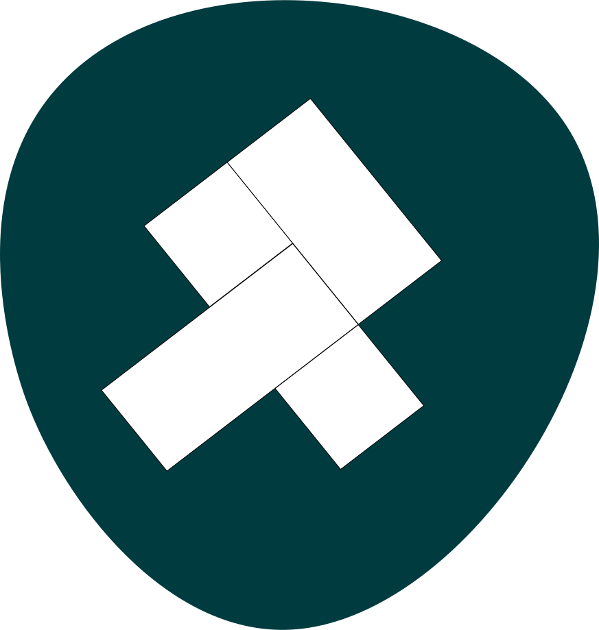

<mat-toolbar style="background: transparent">
    <mat-toolbar-row style="height: 100px; align-items: flex-start;z-index: 10;margin-top: 1%">
      <div routerLink="/" style="margin-top: 5px;">
        
      </div>
      <span class="example-fill-remaining-space"></span>
      <span class="right"></span>
      <span class="example-spacer"></span>
      <button aria-label="Menu" mat-icon-button [matMenuTriggerFor]="menu">
        <mat-icon>more_vert</mat-icon>
      </button>
      <mat-menu #menu="matMenu" class="right">
        <button aria-label="Dashboard" mat-menu-item *ngIf="bool" routerLink="dashboard">
          <mat-icon>dashboard</mat-icon><span>{{'Menu.Dashboard' | translate}}</span>
        </button>
        <button aria-label="Login" mat-menu-item *ngIf="!bool" routerLink="login">
          <mat-icon>account_circle</mat-icon><span>{{'Menu.Login' | translate}}</span>
        </button>
        <button aria-label="Logout" mat-menu-item *ngIf="bool" routerLink="logout">
          <mat-icon>account_circle</mat-icon><span>{{'Menu.Logout' | translate}}</span>
        </button>
        <button aria-label="Theme" mat-menu-item (click)="changeTheme()">
          <mat-icon>brightness_medium</mat-icon><span>{{'Menu.Theme' | translate}}</span>
        </button>
      </mat-menu>
    </mat-toolbar-row>
</mat-toolbar>